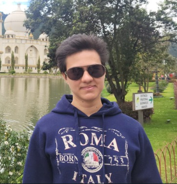

Juan Diego Aycardi
- Nombre: Juan Diego Aycardi Hernandez
- Edad: 28 años
- Profesión: Especialesta en marketing
- Correo: yuuhyunaa@gmail.com
- Dirección: Cra 13 #54-55
Perfil
Especialista en Marketing con 8 años de experiencia en el sector empresarial
introduciendo sistemas de planificacion, presupuestos por producto además
de
análisis de clientes y oportunidades publicitarias, estableciendo objetivos
comerciales y creando planes de retención de clientes.
Habilidades
Profesionales
- Habilidades organizativas
- Estrategias de marketing
- Liderazgo y motivación de personal
- Administración de presupuestos
Personales
- Trabajo en equipo
- Visión para los negocios
- Pensamiento estratégico
- Perfil resolutivo
Escala de valores
- Integridad
- Responsabilidad
- Justicia
- Orden
- Lealtad